- I. DATABASE
Database name used: Government Revenue Management System
- Tables
Admin Table
User Table
Manager Table
Agent Table
Transaction Table
Revenue Table
- II. JAVA
II.1. Introduction
II.2.Tools used to develop this system in java programming
- MySQL Connectors
II.3. Forms description
So let look together how this system will function one by one from the beginning up to the end
- Forgot password
- Create New Account
Forms and Images II.4. Conclusion
- Description
- Forms and Images
Admin under this government revenue system will facilitate to store admin`s data and enhance efficiency, accuracy, and compliance while reducing the risks of fraud of admin data. Note: the created Admin will not have same ability and right in the system. the admin plays a critical role in ensuring the efficient operation, security, compliance, and continuous improvement of your government revenue management system, contributing to effective revenue collection and financial management for the government entity.
Admin table has the following attributesAdmin database table

first_mame (varchar)............................: Firstname for admin
last_name (varchar)..............................: Lastname for admin
email (varchar)......................................: Email of admin
telephone (int).......................................: Telephone number of admin
This table represents the users of the system in payment of revenue to government. The user table typically includes the following details: user ID, First name, Last name, Email, Telephone. This is a table that will be only created by admin, the email and password of customer will be used to login in the system if no they will no longer get access to system.
Admin table has the following attributesUser database table

Id (primary key)......................................:Id for the user
first_mame (varchar)...............................:First name for user
last_name (varchar).................................:Last name for user
tin_number (int)......................................:Tin number for user
age (int)...................................................:Age of user
address (varchar).....................................:Address for user
email (varchar).........................................:Email of user
registration¬¬¬_date (date).....................:Registration_date of user
agent_id (foreign key)..............................:Id of agent
the manager plays a pivotal role in ensuring the smooth operation, compliance, and optimization of your government revenue management system, contributing to efficient revenue collection and financial management for the government entity.
Manager table has the following attributesManager database table

Id (primary key)....................................: Id for the manager
first_name (varchar)..............................: First name of manager
last_name (varchar)...............................: Last names of manager
Address(varchar)...................................: Address of manager
Specialization (varchar)........................: Specialization of manager
the agent in your government revenue management system plays a multifaceted role in managing data, facilitating transactions, ensuring compliance, and enhancing user experience to optimize revenue collection and financial operations.
Agent table has the following attributes
Agent database table

Id (primary key)...................................: Id for the agent
first_mame (varchar)............................: Firstname for agent
last_name (varchar)..............................: Lastname for agent
email (varchar).....................................: Email for agent
telephone (int)......................................: Telephone number of agent
adminid (foreign key)...........................: Id of admin
managerid (foreign key).......................: Id of manager
transactions play a crucial role in facilitating secure, efficient, and transparent financial interactions within your government revenue management system, contributing to revenue collection, financial accountability, and user satisfaction.
Transaction table has the following attributes
Transaction database table

Id (primary key)......................................: Id for the transaction
userid (foreign key)..................................: User id of user
revenueid (foreign key)............................: Revenue id of revenue
The primary function of revenue within the system is to collect payments from taxpayers, businesses, and other entities for government services, taxes, fees, fines, and licenses. Revenue management within your government revenue management system website plays a vital role in ensuring effective revenue collection, financial transparency, compliance with regulations, and strategic financial planning for government entities.
Revenue table has the following attributes
Revenue database table

id (primary key)......................................: Id for the revenue
amount (int)............................................: Amount of revenue
revenue_type (varchar)...........................: Revenue type of revenue
An LDM of this system entities (Tables)
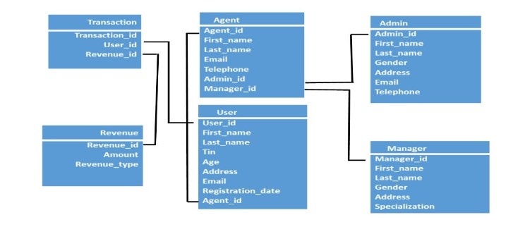
An ERD of this system entities (Tables)
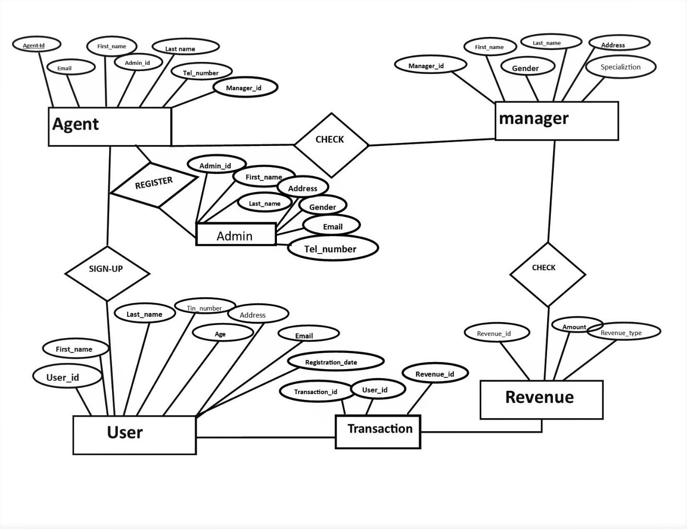
CREATION OF VIEW TO INSERT DATA INTO THE TABLES
CREATE VIEW admin_view AS
-> SELECT * FROM admin-> WHERE admin_id =3;
CREATE VIEW agent_view AS
-> SELECT * FROM agent-> WHERE agent_id =5;
CREATE VIEW manager_view AS
-> SELECT * FROM manager-> WHERE manager_id = 2;
CREATE VIEW revenue_view AS
-> SELECT * FROM revenue-> WHERE revenue_id =4;

CREATE VIEW transaction_view AS
-> SELECT * FROM transaction CREATE VIEW user_view AS
-> SELECT * FROM user-> WHERE user_id =5;

DATABASE AND JAVA WITH GOVERNMENT REVENUE MANAGEMENT SYSTEM
In this chapter I will be describing how powerful general purpose programming language was used to create the analyzed system. Under this chapter I will undergo full detail of how everything will function together with database that have been describe above and how it cope with full analyzed system.
Eclipse IDE : An integrated development environment used in computer programming. It contains a base workspace and an extensible plug-in system for customizing the environment. It is the second-most-popular IDE for Java development, and, until 2016, was the most popular.
JAR stands for Java Archive : It's a file format based on the popular ZIP file format and is used for aggregating many files into one. Although JAR can be used as a general archiving tool, the primary motivation for its development was so that Java applets and their requisite components.
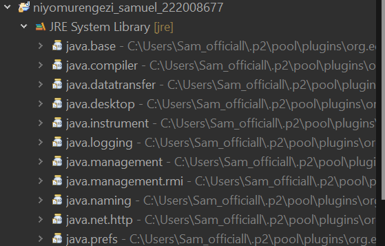MySQL provides standards-based drivers for JDBC, ODBC, and Net enabling developers to build database applications in their language.
1. USER LOGIN :
This the first page of the system where system will choose destination depending on the function he/she possess in this government revenue management system
Login Button
Login Button: This button is dedicated for system admin to login so that he/she can do more in the system, like adding viewing different entities of this system by doing different modification.
Forgot password: This button will facilitate the user who forgot the password this button will facilitate the user to request administrator to reset.
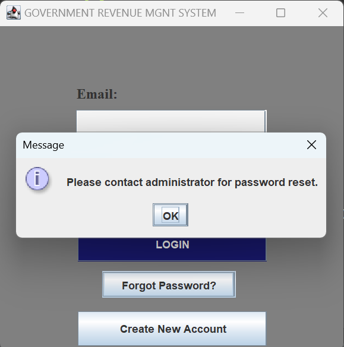Create New Account: individual user can register on through the use of create new account button that will direct the user form to fill his/her information as required by the system
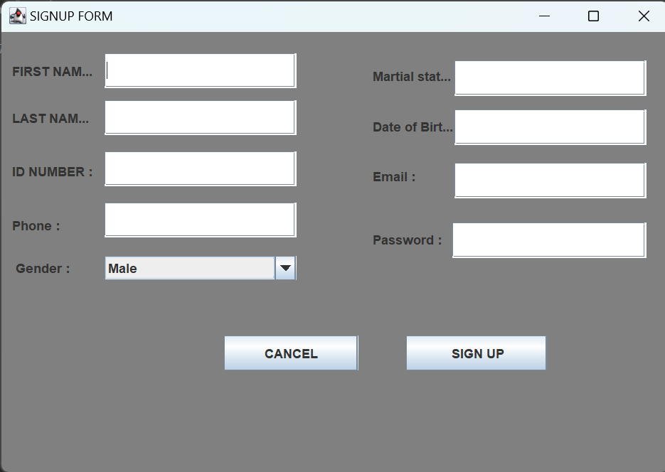2. ADMIN LOGIN
As we have described in above page login form will direct as on this admin login page. A designated Administrator in this system manages user access of all participant of the system including users, agent, managers oversees financial transactions, and ensures revenue management and data integrity.
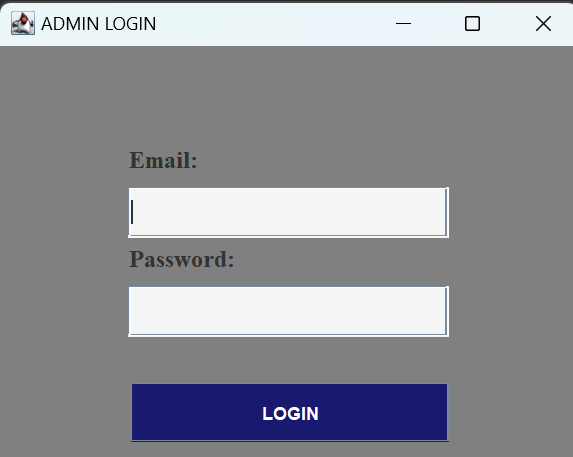 So the after admin inserting email and password its will direct into admin dashboard
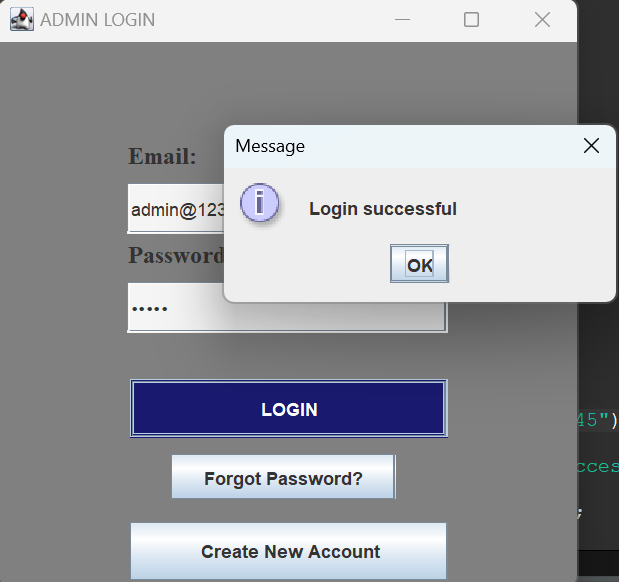
Admin dashboard after login
With this page we will be show the different tasks like modifying information being inserted by different entities like user, agent who exist or not exist in the system or who do not have knowledge to use the system.
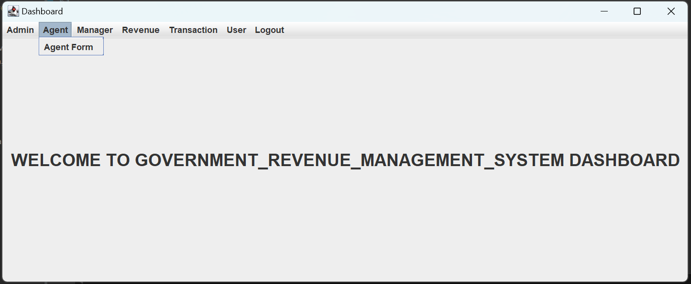So for this system after admin log in his/her account in dashboard can access to different entities of the system that are described below;
1. Agent Form
Under this page the system admin will insert, read, update and even delete an agent in this agent form in the system using generated information addition on that admin can view list of all registered employee whether those who are registered by admin. By incorporating agents into your government revenue management system, you can enhance efficiency, accuracy, and compliance while reducing the risks of revenue leakage and fraud.
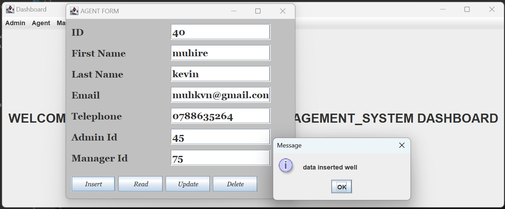2. Manager Form
Under this system the manager has the responsibility of managing agents by gathering all information’s from the user of our system. Managers play a key role in analyzing revenue data to identify trends, patterns, and potential areas for improvement.
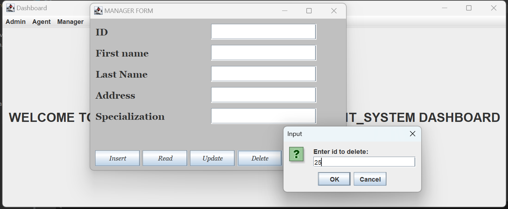3. Revenue
In this system this is the one of key entity in which user fill so as during revenue payment with this form it will facilitating the user. This is important part of the revenue system because it will be focusing on government revenue that flow into government but holding together that contributing in country.
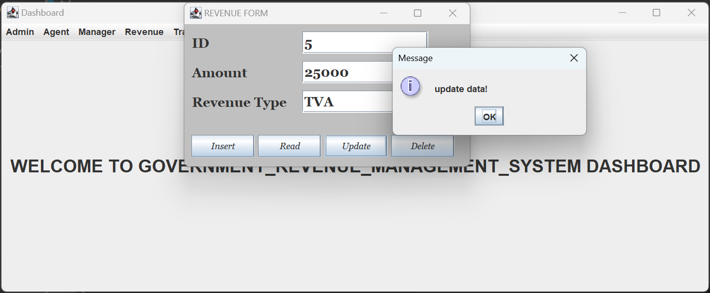4. Transaction Form
This transaction as an entity in this system it stands like a bridge between user and revenue. Transactions serve as the pivotal link between users and revenue in the system, documenting every financial interaction that are fulfilled by the user during payment of revenue.
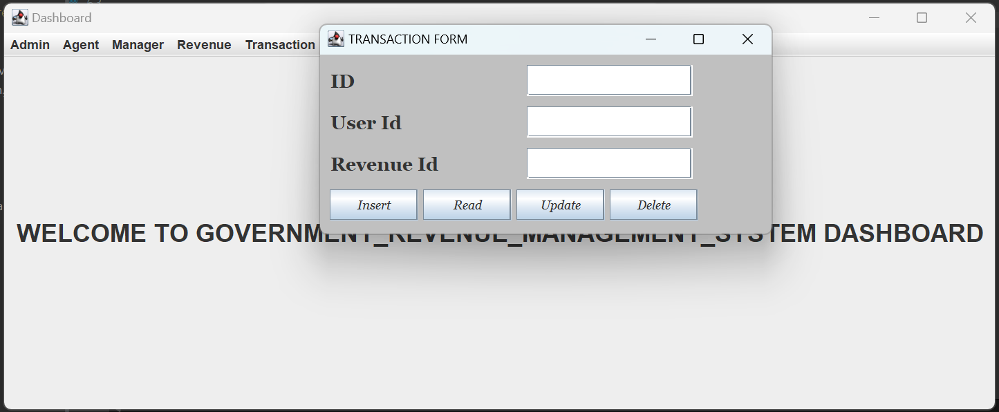5. User Form
Under this system administrator will create new system user who can access the system by logging in using email and password that have been given, and they will access system on what function he/she possess like during transaction of revenue. Under this page admin can add or modify the information of the user in in this system so that the functioning of the system will continue. the information entered from this page will go directly to be stored in database table called user.
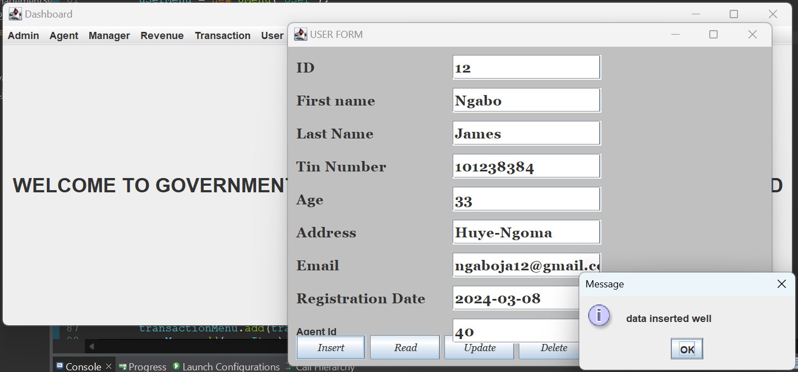 LOGOUT
Administrator can securely log out to end their session, ensuring data privacy and system security. Upon logout, the system clears admin credentials, terminates active sessions, and redirects to the login page, maintaining the integrity and confidentiality of government revenue data.
And then apart from admin login the user of this system have directing for user login and access different user related entities of the system as shown bellows;
3. USER LOGIN FORM
This the page on which new created user will use given email and password that are recorded in database called in table called admin to login so that he/she can access the system features he/she is allowed to. Under this user has own login form so as to access and make the transactions of revenue as follows
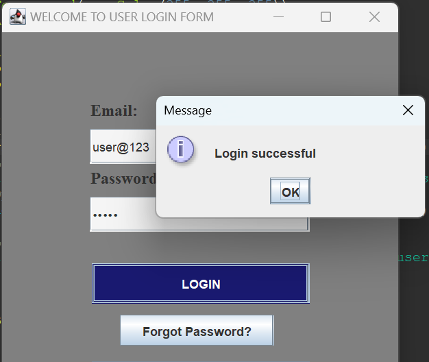The dashboard provides a comprehensive view of revenue and transactions. Users can monitor their transactions of revenues, read revenue from database, and access detailed transaction records.
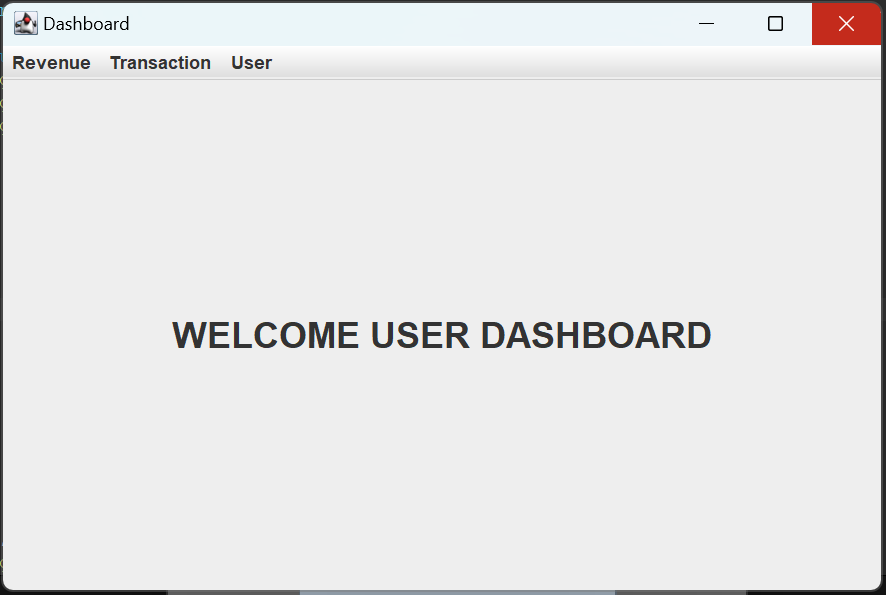> Revenue
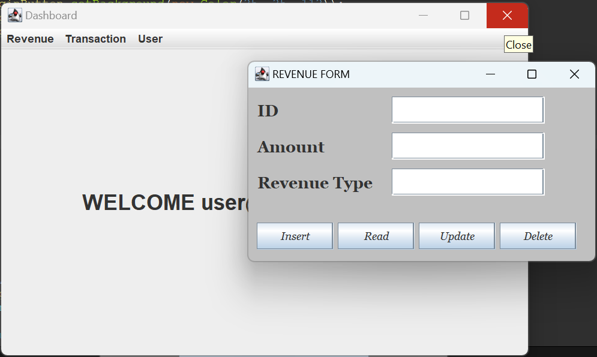
> Transaction
In this system, these transactions would be implemented using appropriate data structures, classes, and database operations to maintain accurate records and ensure the system's smooth functioning for this system it is defined as like the bridge between user who pays revenue and revenue as an entity in this system.
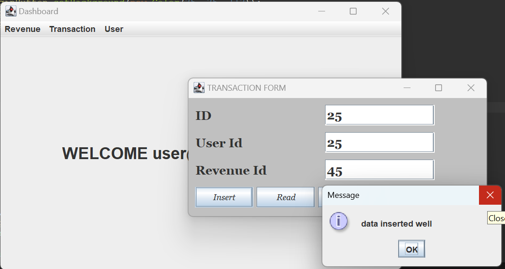Concluding this chapter concerns with java programming especially in my developing this system, several key achievements have been realized and works. Firstly, the implementation of this system has greatly enhanced the efficiency and accuracy of revenue collection and tracking processes, resulting in improved financial transparency and accountability of government revenue management system.